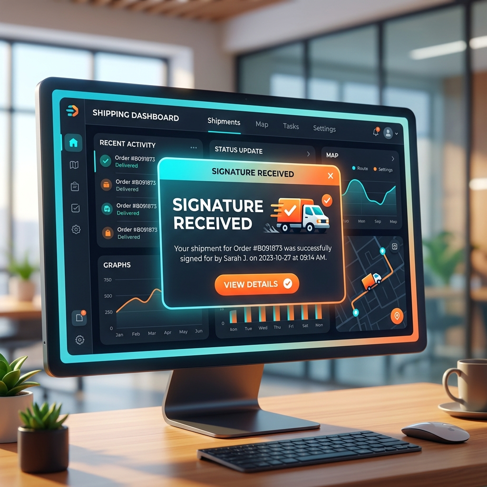

Dal PC puoi gestire l'intera flotta. La tabella principale mostra lo stato di ogni consegna aggiornato in tempo reale dai driver.

Ogni volta che un driver salva una firma o una foto, l'ufficio riceve un Popup di notifica istantaneo sul PC.
Le prove di consegna non sono più una lista confusa. Il sistema le organizza automaticamente:
App_Mobile\server\PROVE_CONSEGNA
Ogni mattina, avvia il Ponte Mobile (icona camion arancione) per permettere ai driver di collegarsi. Il sistema attiverà il tunnel sicuro in automatico.
La Dashboard della logistica gestisce i chilometri in modo automatico (Autopilota) senza richiedere calcoli manuali: